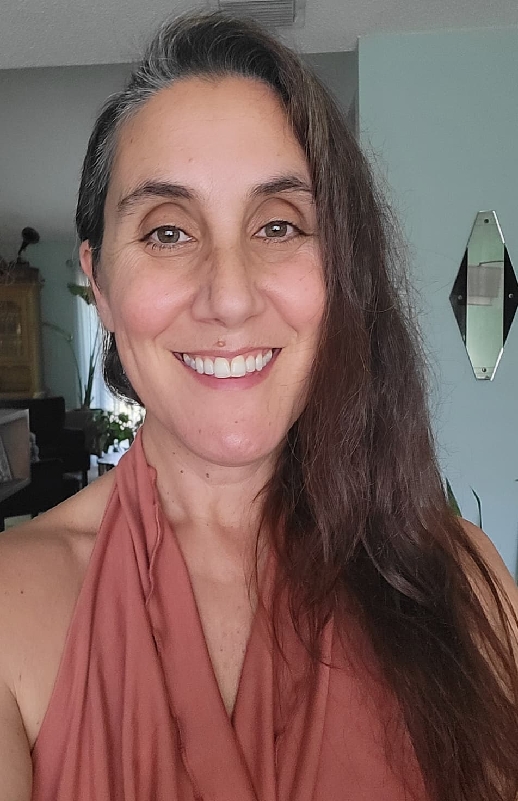
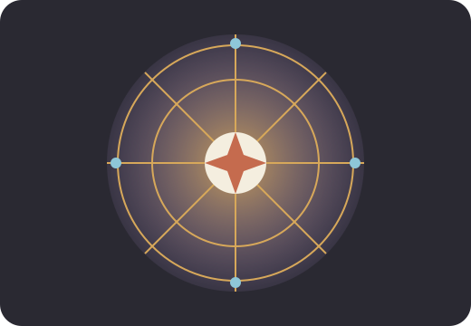
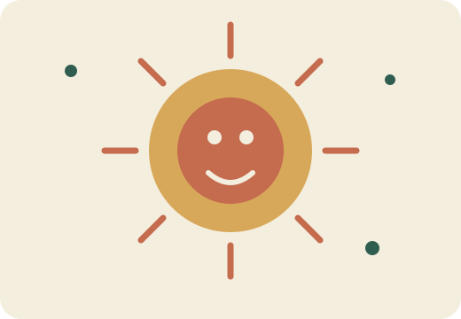
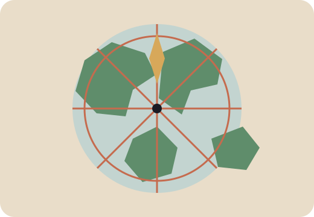
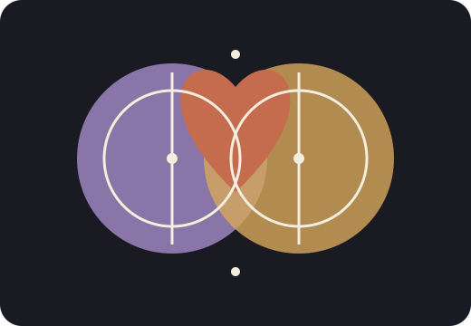

“He who looks outside dreams.He who looks inside awakens.”
— Carl Jung
As a certified Insight Coach drawing from sixteen years of immersive study in wisdom traditions from around the world, it is my honor to support your unique path.
Having spent weeks at a time in silence and solitude since 2015, These periods of introspection nurtured a depth of presence and connection within my own heart that has shaped my experience of life ever since.
Stabilizing in this perspective of heart-centered presence has become my continuous practice both on and off the mat, and I have dedicated my life to guiding others to do the same.
It is my life's work to support clients and students in going beyond their perceived limitations and moving forward with inner stability, connection, and trust.
Coaching and Mentorship with Lindsay

At the core of all Coaching and Mentorship sessions I honor the principle that the source of change resides inside the client themself.
I believe that every person carries the capacity, wisdom, and directionality for their own healing within. It is an innate aspect of human consciousness that can be accessed by anyone at any time.
This shows up in our 1:1 sessions as:
- Asking rather than telling — I guide clients to find their own answers with intuitive questions rather than telling them what to do
- An emphasis on exploration, presence, and inner alignment
- Inviting a genuine interest within the client to experience new perspectives
- Unraveling blockages and areas of stuckness in real time
- Trusting the client's unique pace and process, inviting meaningful personal and/or professional transformation to unfold
Long-term Coaching & Mentorship Containers
GSHA Coaching and Mentorship containers are a multi-session experience designed to identify and shift out of the unconscious patterns that keep us feeling limited and stuck.
In these containers you receive:
- a clearly defined, safe, intentional space of transformation
- customized guidance in the form of weekly 1:1 sessions (60 minutes each)
- messaging support in between sessions
Coaching & Mentorship: $555/month, includes weekly 1:1 sessions and text message support between sessions.
Book your complimentary 30-minute consultation to see if we're a good fit.
Conscious Astrology
All readings are infused with an intention to deepen the client's connection with their inner compass, catalyzing renewed inspiration and empowering them to live their most authentic life.

Natal Chart Consult
The position of the planets at the moment of birth offers a roadmap for aligning with one's inner compass, revealing the key themes shaping our life and consciousness. By exploring the natal chart, insights into gifts and challenges emerge, fostering deeper awareness, empowerment, and the freedom to live in harmony with one's purpose.
$150 USD · one hour

Solar Return Consult
Unlock the energetic themes at play each year, as the Sun returns to its exact position in the natal chart (around the time of your birthday). With an understanding of these influences, we can shape the year ahead with greater clarity, alignment, and purpose.
$150 USD · one hour

Astrocartography
Discover how planetary energies, calculated from your natal chart, interact with different regions across the globe. Receive personalized insights into locations that hold special significance or interest for you.
$150 USD · approximately one hour

Relationship Synastry Consult
We compare two natal charts to bring a deeper understanding of the play of energies and patterns between people. This can offer a fresh perspective and new tools for navigating relationships.
$300 USD · approximately ninety minutes
Client reflections
“Lindsay not only provided new insights into and a clearer perspective of what I perceive to be undeniable truths about the who, what, and why of our shared human experience, she also confirmed long-held theories and suspicions about who I am, my path in life, the personal journey I've take to this point, and what I hope lies ahead as part of my current personal goals. Further, her wealth of knowledge in regard to these subjects and in terms of her practice are beyond impressive. The time we spent together didn't feel cursory or superficial - this was a completely and thoroughly in-depth look and discussion, during which she consistently displayed a kind, caring, attentive, informative, and patient nature towards the entire proceeding and her client, me. Finally, for me, one of the most important aspects of our session was that she listened - carefully and observantly - and the entire time I felt like she really, truly cared about what she was doing, her client, and the desire to gain and offer clarity, healing, and support. I cannot recommend her highly enough for any person who is seeking this sort of spiritual, emotional, personal analysis. Thank you, Lindsay, for the gift you gave me.”— L.V.
“I sought Lindsay out to provide my multiple astrological readings- with each reading (I did the natal chart, astro cartography and an EPIC reading) my life broadened and changed. I learned so much about myself, not from what the stars said but from the way Lindsay helped me question and expand from the readings. After each reading I felt a deep peace, like a piece of the puzzle of my life had fallen into place.”— Tracey G.
Yoga
Thursday night sangha
Patanjali's Yoga Sutras and Hridaya Hatha Yoga
Thursday nights · Online
Join us for fellowship and shared aspiration as we explore our lived experience through the lens of yogic wisdom.
Having guided group studies of Patanjali's Yoga Sutras since 2020. It is one of my greatest passions to explore the embodiment of this wisdom with others. I have guided the healing and heart-centered practice of Hridaya Hatha Yoga since 2016, emphasizing a continuity of awareness, presence, and meditation even as the body moves, so that our life becomes our practice.
1:1 Yoga with Lindsay
Personalized Practice
$75 for one hour
Client Reflections
“I had the profound privilege of studying yoga, sutras, and meditation with Lindsay, and the experience was truly transformative. Lindsay is a gifted teacher, radiating passion and warmth, with an infectious love for people and life.”— Client reflection
“Her presence embodies a beautiful energy that envelops everyone in love and welcome. I wholeheartedly recommend Lindsay to anyone seeking guidance, wisdom, and inspiration!”— Artur A.
“Lindsay’s guidance as a yoga instructor has been wonderful. Just being in her presence brings a sense of calm. She radiates wisdom and inspires trust, showing genuine care and passion for what she does. Practicing with her is truly a nurturing experience.”— Astrid B.
“I regularly attend Lindsay's online Hridaya Hatha Yoga yoga classes, and look forward to Thursday each week because of them. Throughout my life now, I hear Lindsay's voice in my head, encouraging me to practice loving kindness, to listen to my heart and to rest in stillness so that I can respond instead of react. Her voice and her teaching are integral to my wellbeing and life enjoyment.”— Tracey G.
Thursday nights
Suggested donation: $15–20 for Hridaya Hatha Yoga, or $20–30 if joining us for both the Sutras contemplation and yoga practice.
Book NowLet's Connect
For more info, please email Lindsay@theguidingstar.life or book a free 30-minute consultation and see if we're a good fit for working together.